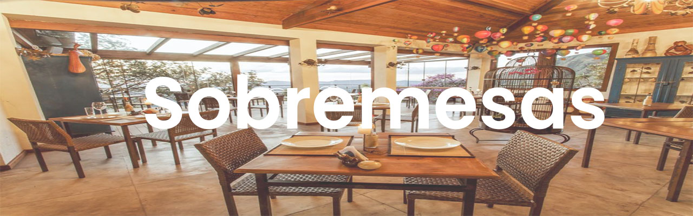
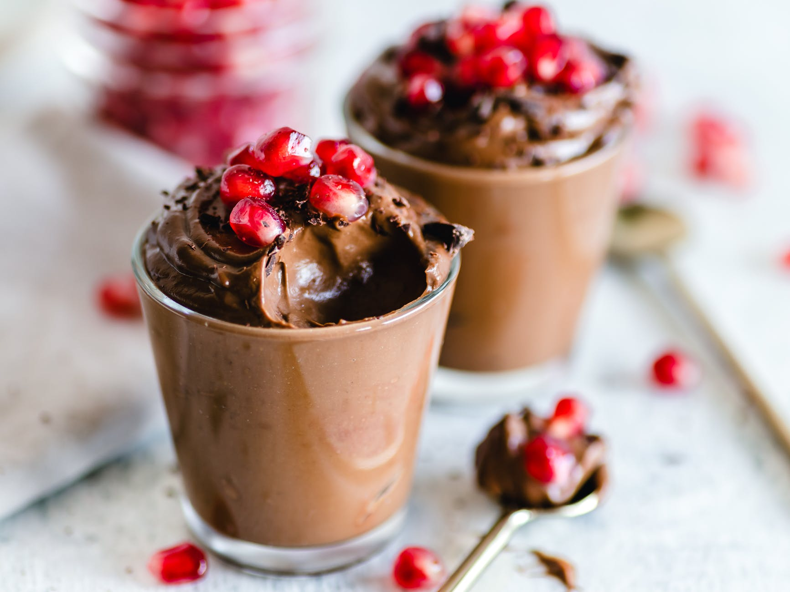
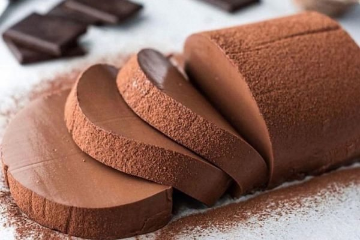
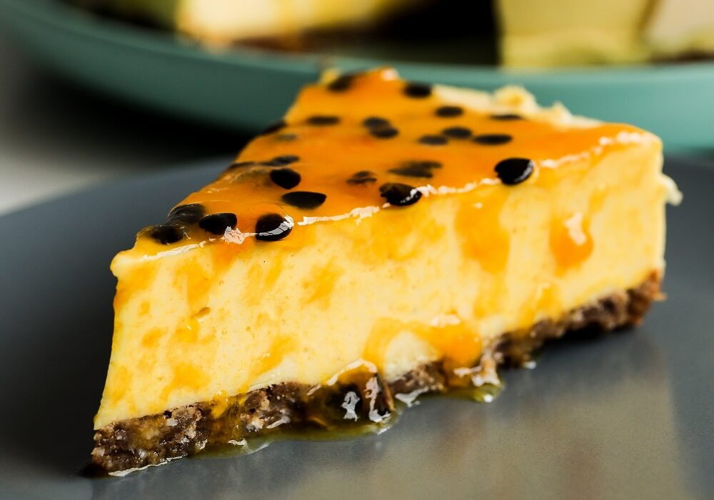

- Mousse De Cholocate
- Delicioso mousse de chocolate feito com igredientes veganos.
Igredientes: chocolate 70%; leite de coco; Emulsificantes de linhaça; Açucar demerara. - 500g
- $ 6.00

- Pudim De Cholocate
- Delicioso pudim de chocolate feito com ingredientes veganos.
Igredientes: Leite de coco; Açucar demerara; Amido de milho; Chocolate 70% - 500g
- $ 5.00

- Torta De Maracujá
- Deliciosa torta de maracujá feito com ingredientes veganos
ingredientes: biscoito lottus; Óleo de coco; Leite de coco; Açucar demerara; Limão; Maracujá; Manteiga de Cacau - 500g
- $ 7.00